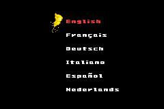
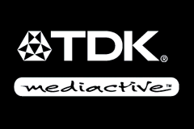

Shrek - Reekin' Havoc (USA) (En,Fr,De,Es,It,Nl)
EEPROM 4K Save Format Spec gbakit Built-In Debug Menu Patch 💾 MultiBoot 🎮 4P Link
Cartridge Identity
- Game Code
AOIE(FamilyAOI)- Header Title
SHREK 3- Maker / Revision
6S/ rev0- ROM Size
- 8.0 MiB (8,388,608 B)
- Save Media
EEPROM 4K- SHA-256
55158d0a74d6ec54cbe10e18de751f9e2556c675f1404862adb2a11f8664ed0a
Screenshots


Debug Menu Re-Enablement Patch (.ips)
Download AOIE-debug.ips (17 B IPS / 4 B delta)
- Hook Mechanism
task_constructor_ptr_redirect· Replace boot task callback literal at 0x08000d30 (0x08012c89 -> 0x08013aa5) with Stage Select task constructor- IPS SHA-256
431eeb7bdb8542d79487639162dfebdead01d101f65b59f04008e436e5deb770
gbakit patch apply AOIE-debug.ips original.gba patched-debug.gba

Link Cable & Multiplayer Communications
This title contains detected communication capabilities: 💾 MultiBoot 🎮 4P Link.
Detailed protocol specifications, SIO registers, Joybus commands, and MultiBoot sequences are documented in the Link & Multiplayer Reference.
- Multi-Player SIO (4P)
- 16-bit ring network · SIOCNT (
0x04000128) literals:0x000844,0x000874,0x000adc· SIODATA32/SIOMULTI0 (0x04000120) literals:0x000bf0 - Single-Cart MultiBoot
- Single-Cartridge MultiBoot (Download Play) client/server handler · Thumb SWI 0x25 (
0xDF25):0x0a66d0,0x0bedf6,0x1e3e88,0x2c0c10
Battery Save Format Specification
Open Full Save Format SpecDownload save-format.json
- Specification Coverage
- 4 mapped fields · 0 verified checksum(s) · Confidence: HIGH
- gbakit Built-In Support
- Built-in (AOIE)
gbakit save verify AOIE save.sav
gbakit save decode AOIE save.sav
gbakit save fix AOIE damaged.sav -o repaired.savObserved Battery Save Layout
- Fill Byte & Active Size
0x00fill · 147–512 / 512 B active (entropy 1.04 bits/B)- Active Offset Ranges
0x0–0x1FF(1 total)- ASCII Magic / Headers
002S- Observed Variable Regions
- 377 bytes across 9 spans:
0x1–0xF,0x11–0x57,0x59–0x67,0x69–0xAF,0xB1–0xBF,0xC1–0x107,0x109–0x10F,0x118–0x14F, +1 more - Candidate Checksum/Counter Spans
- None
Asset Map (formatkit.asset-map.v1)
Download AOIE-r0-55158d0a74d6ec54.asset-map.json.gz (183,043 B (178.8 KiB)) Verified PASS · 31.54% coverage
| Metric | Bytes / Value | Entries |
|---|---|---|
| Identified | 857,655 B (837.6 KiB) (10.22%) | 2,122 |
| Mapped | 0 B (0.00%) | 0 |
| Opaque | 1,788,260 B (1.71 MiB) (21.32%) | 1 |
| Unknown | 5,742,693 B (5.48 MiB) (68.46%) | 1,629 |
| Total ROM Size | 8,388,608 B (8.00 MiB) | 3,752 |
| Coverage % | 31.54% | — |
| Entries w/ Code Refs | 2,157 / 3,752 (57.49%) | — |
Top Identified Formats: compress.bios-lz77 (1,421 · 715,959 B (699.2 KiB)) · gfx.gba-palette (699 · 139,968 B (136.7 KiB)) · audio.m4a-song-table (1 · 1,536 B (1.5 KiB)) · gba.rom-header (1 · 192 B)
Largest unknown Extents (Headerless / Custom Asset Candidates)
| Offset | Size | Shannon Entropy | Code Refs |
|---|---|---|---|
0x002B20B8 | 3,773,924 B (3.60 MiB) | 7.010 bits/B | 8 |
0x001969A2 | 1,159,446 B (1.11 MiB) | 6.618 bits/B | 0 |
0x00014DB4 | 45,788 B (44.7 KiB) | 6.513 bits/B | 0 |
0x00104120 | 35,808 B (35.0 KiB) | 4.932 bits/B | 0 |
0x0004672C | 26,776 B (26.1 KiB) | 6.376 bits/B | 0 |
gzip -dk AOIE-r0-55158d0a74d6ec54.asset-map.json.gz && gbakit map verify rom.gba AOIE-r0-55158d0a74d6ec54.asset-map.json
gbakit assets export rom.gba --asset-map AOIE-r0-55158d0a74d6ec54.asset-map.json -o out/Text, Fonts & Scene Data
- Primary Text Encoding
- LZ77-compressed ASCII (
9ASCII strings ·3LZ77 ASCII blocks) - Font & VWF Indicators
- VWF Width Table 1bpp Font · BIOS SWIs: BitUnPack
0x10:36· LZ770x11/12:27· Huffman0x13:9· RLE0x14/15:17 - Scene & Packaging
23ROM pointer tables (≥32 entries,3≥200) ·1relativeu32TOCs ·201OAM metasprite hits
Password System
- Save Media
- Battery-Backed (EEPROM)
- Password Class
- Candidate Static Password Table (
candidate_static_table_no_ui) - Static Table(s)
0x86194
Regional Variants & Revisions (Family AOI)
- Shrek - Reekin' Havoc (Europe) (En,Fr,De,Es,It,Nl) (
AOIP, 8 MiB)